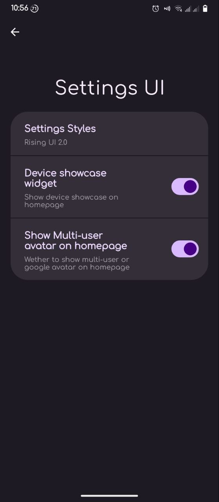
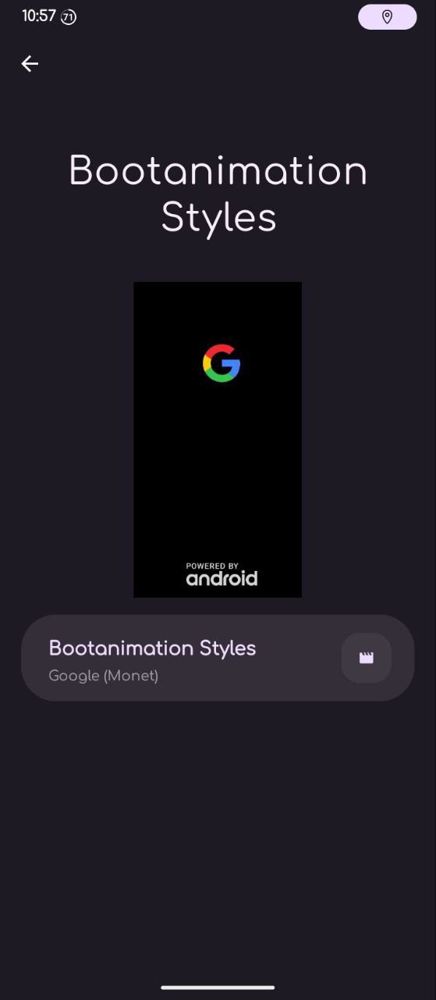
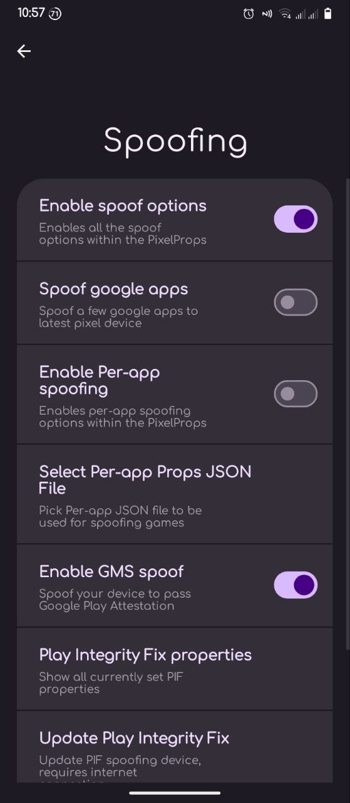
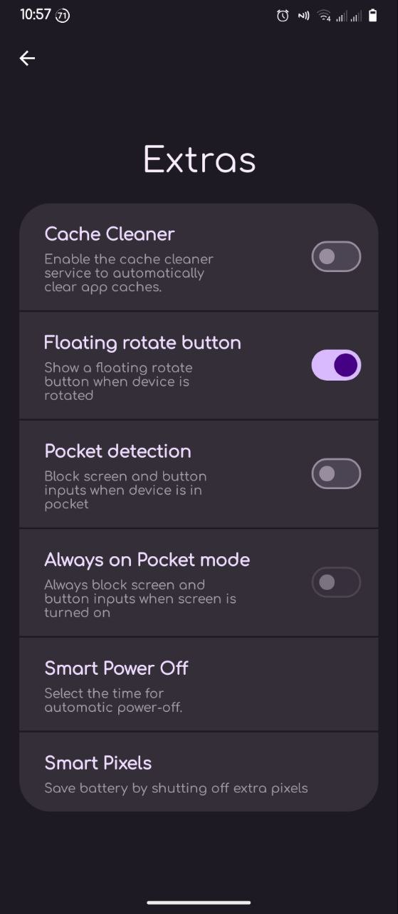
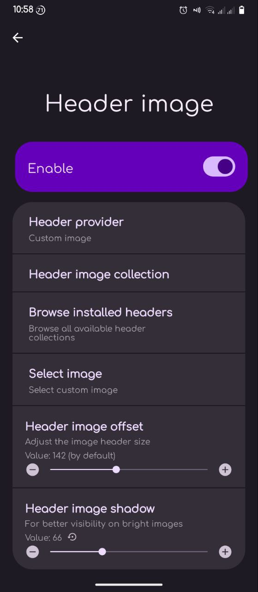
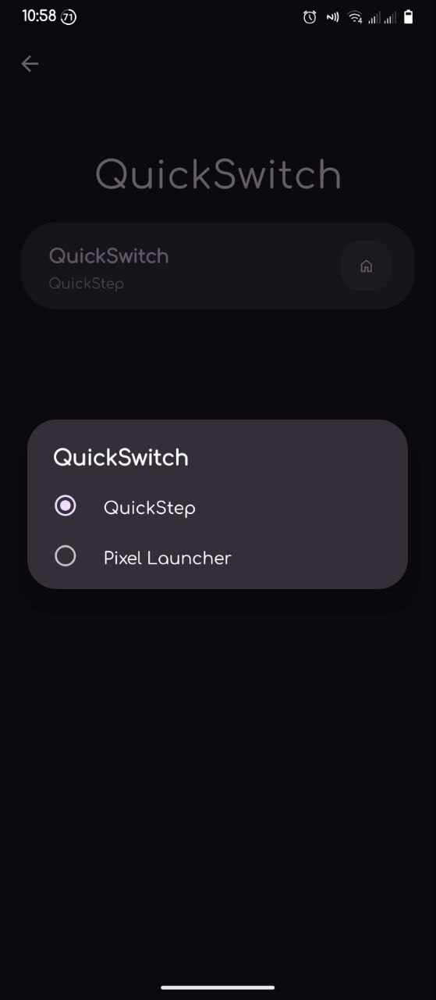
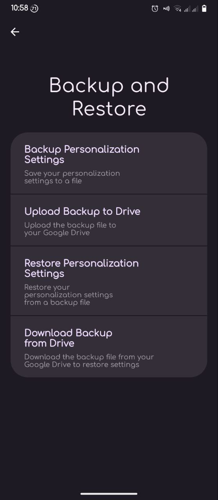
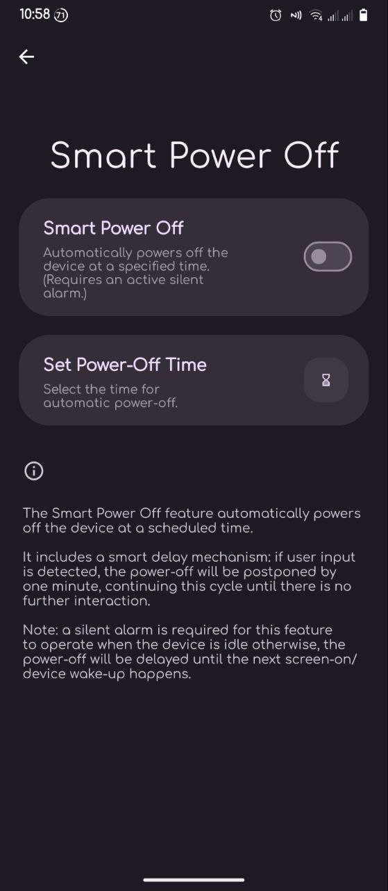
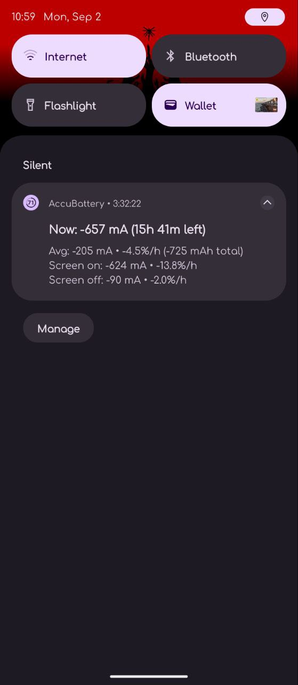

- Signed build
- CoreGApps release
- If coming from builds older than 4.2(including but not limited to official 1.4 build, Alter' 3.1 build and my 3.2 build) execute
this script as root in terminal emulator or adb shell before flashing the update









OSS kernel bugs:
DT2W on focaltech touch panels
FP gestures(use
module to fix)
If you found some more bugs -
pm me
sir
@spesmynuts for banner
@itzDFPlayer for MIUI Camera and its adaptation for fog
@CHRISL7,
@AkiraNoSushi,
@muralivijay9845 and
@Teleg3_7 for kernel source
@dblenk9 for device tree
@AlterNoegraha for QPR3 device tree and many kernel & device tree fixups